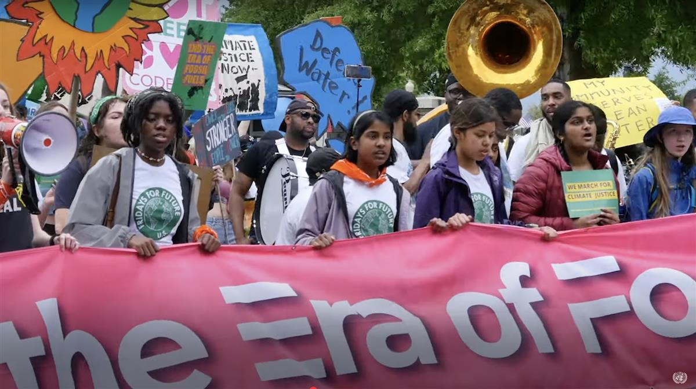

UN Photo/Loey Felipe Secretary-General António Guterres addresses the Summit of the Future high-level event at United Nations Headquarters in September 2024.
ON SOURCE: UN NEWS
30 December 2024 UN Affairs
In New Year’s Message, Guterres urges countries to drastically slash emissions and ‘exit this road to ruin’
UN Secretary-General António Guterres called for making 2025 “a new beginning” in his message for the New Year, issued on Monday.
Reflecting on 2024, he stated that “hope has been hard to find”, with wars causing enormous pain, suffering and displacement, and inequalities and divisions fuelling tensions and mistrust.
“And today I can officially report that we have just endured a decade of deadly heat,” he said.
‘No time to lose’
The Secretary-General noted that the top 10 hottest years on record have occurred in the past decade.
“This is climate breakdown — in real time. We must exit this road to ruin — and we have no time to lose,” he said.
“In 2025, countries must put the world on a safer path by dramatically slashing emissions, and supporting the transition to a renewable future. It is essential — and it is possible.”
Hope drives change
Mr. Guterres said that even in the darkest days he has “seen hope power change.”
In this regard, he saluted activists of all ages who are raising their voices for progress, as well as “humanitarian heroes overcoming enormous obstacles to support the most vulnerable people.”
The Secretary-General said he also sees hope in developing countries fighting for financial and climate justice, and in the scientists and innovators breaking new ground for humanity.
He stressed that the Pact for Future, adopted last September by UN Member States, is a new push to build peace through disarmament and prevention.
Other aims include reforming the global financial system, pushing for more opportunities for women and youth, and ensuring that technologies “put people over profits and rights over runaway algorithms”.
Here, he also underlined the need to always stick to the values and principles enshrined by human rights, international law and the United Nations Charter.
Nations united
The Secretary-General concluded by stating that there are no guarantees for what lies ahead in 2025.
He pledged to stand with all those working to forge a more peaceful, equal, stable and healthy future for all people.
“Together, we can make 2025 a new beginning,” he said. “Not as a world divided. But as nations united.”
ON SOURCE: UN NEWS

♦ Receive daily updates directly in your inbox - Subscribe here to a topic.